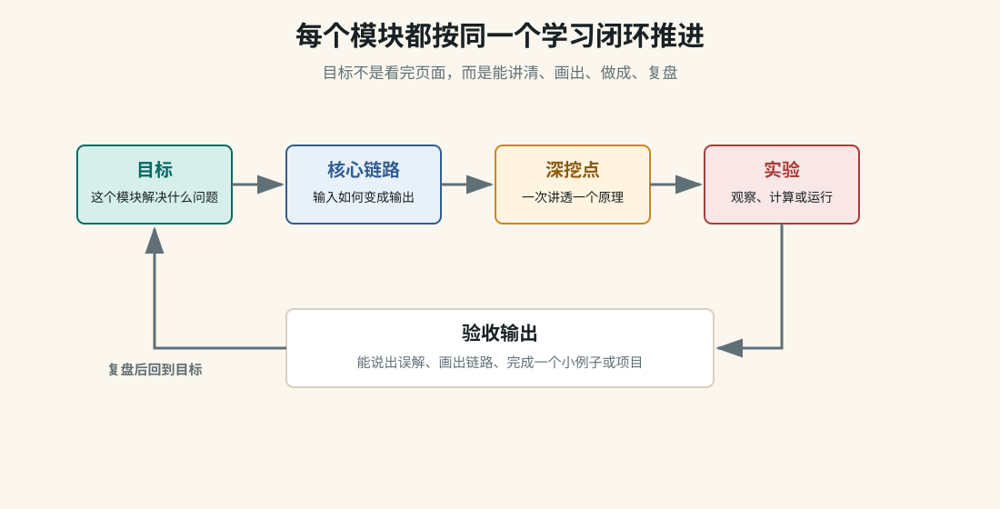

Systems Thinking
用系统思维把复杂世界看成可分析的结构
很多问题看起来属于不同领域：Agent 为什么会循环调用工具，房价为什么难降，城市为什么拥堵，历史危机为什么升级，学习为什么容易半途而废。系统思维提供一套通用语言：反馈环、延迟、存量、流量、边界、约束、涌现和杠杆点。

这个模块解决什么
| 问题 | 系统思维看法 |
|---|---|
| 为什么努力越多，结果反而更差？ | 可能存在负反馈延迟、错误指标、局部最优或反作用环。 |
| 为什么一个小变化会突然引发大变化？ | 可能积累了存量压力，触发阈值后出现非线性跃迁。 |
| 为什么政策或管理动作常常有副作用？ | 系统有多个反馈环，短期改善可能制造长期问题。 |
| 为什么复杂系统不能只靠单点优化？ | 整体行为来自组件之间的关系，而不只是组件本身。 |
学习入口
模块宪章
规定系统分析怎么写：先画边界，再找变量、反馈、延迟、存量和杠杆点。
查看宪章反馈环
理解增强回路、平衡回路，以及为什么系统会增长、崩溃、震荡或稳定。
进入反馈存量与流量
理解财富、库存、知识、信任、债务、用户数这些东西为什么有积累效应。
进入存量流量杠杆点
学习改变系统时从哪里下手：参数、规则、信息流、目标和心智模型。
进入杠杆点案例模式
用 Agent、学习、城市、经济金融和历史危机练习系统分析。
进入案例一张总图
系统边界
-> 关键变量
-> 存量与流量
-> 增强反馈 / 平衡反馈
-> 延迟与阈值
-> 指标与激励
-> 规则与约束
-> 杠杆点
-> 行为模式：增长、震荡、崩溃、稳定、涌现建议学习顺序
| 阶段 | 页面 | 训练重点 |
|---|---|---|
| 先定方法 | 模块宪章 | 每次分析先画边界，不急着找单一原因。 |
| 找反馈 | 反馈环 | 区分增强回路和平衡回路，解释增长、崩溃和稳定。 |
| 看积累 | 存量与流量 | 理解知识、债务、信任、用户、库存为什么会慢慢积累或耗尽。 |
| 找干预点 | 杠杆点 | 从参数、信息流、规则、目标、心智模型不同层级寻找改变位置。 |
| 练迁移 | 案例模式 | 把同一套语言迁移到 Agent、学习、城市、经济和历史。 |
验收标准
能画出：至少一个增强反馈和一个平衡反馈。
能区分：存量和流量，不把一次性事件误当成系统状态。
能解释：为什么延迟会导致过度反应、震荡或误判。
能迁移：用同一套结构分析 Agent、经济、城市、历史或学习问题。
能反省：自己的判断是否只抓了一个局部原因，而忽略了系统边界。